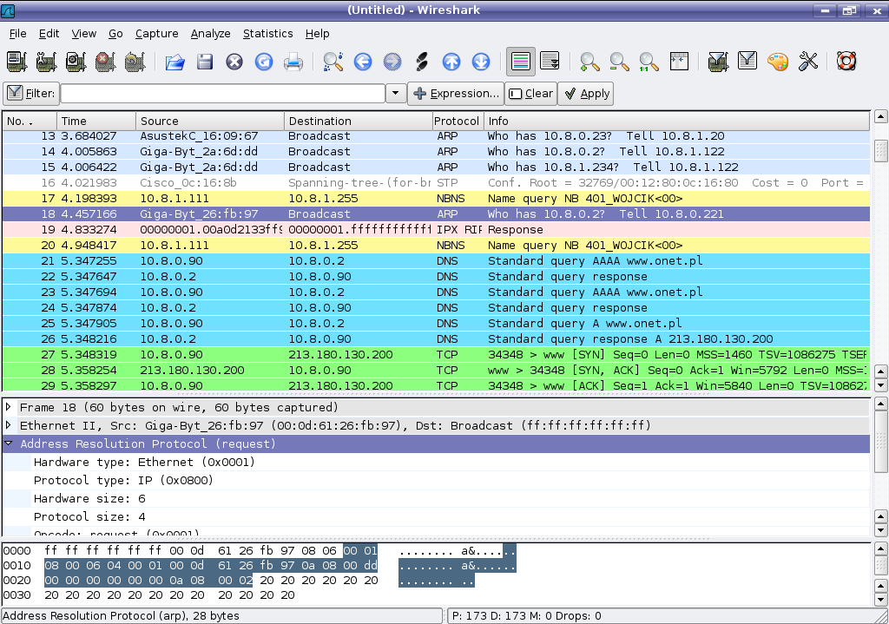
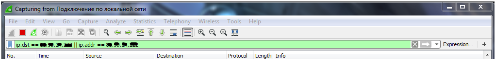

Wireshark (ранее — Ethereal) — программа-анализатор трафика для компьютерных сетей Ethernet и некоторых других. Имеет графический пользовательский интерфейс.
Официальный сайт: https://www.wireshark.org/
Для отслеживания конкретного приложения необходимо указать IP адрес хостинга с которым происходит обмен пакетами.
Например так:
ip.dst == 08.09.10.111 || ip.addr == 08.09.10.111
Или так чтобы показывались только пакеты большого объема
(ip.dst == 08.09.10.111 || ip.addr == 08.09.10.111) && udp.length >= 100

Фильтр: ip.dst == 08.09.04.002 || ip.addr == 08.09.04.002
слушай интерфейс сетевухи через этот фильтр, получишь пакеты игры, только отключись еще от rdp если подключен
Можешь сразу вот так, чтобы у тебя и в списке этих мелких пакетов не было
(ip.dst == 08.09.04.002 || ip.addr == 08.09.04.002) && udp.length >= 100

Created with the Personal Edition of HelpNDoc: Easily create Qt Help files